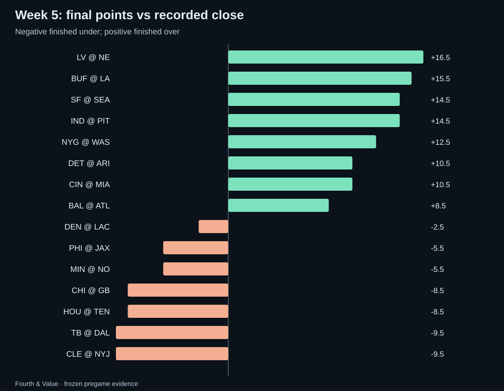
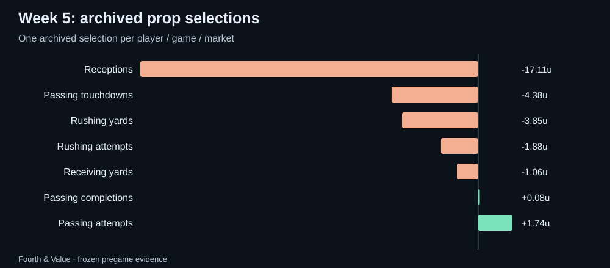
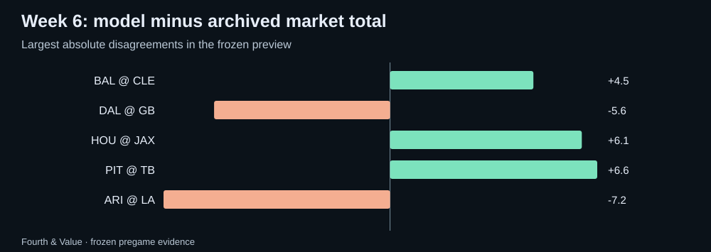

Fourth & Value · Weekly market review
NFL Week 5 review: the model receipts and the Week 6 watchlist
An audited Week 5 scorecard using frozen pregame data, plus Fourth & Value model-market disagreements to research for Week 6.
Week 5: the market scoreboard
Recorded closes produced 8 overs, 7 unders and 0 pushes. Against our archived market median, 8 games finished over, 7 under and 0 pushed.
The raw totals model direction went 6–9 with 0 pushes and -3.29u across 15 games with archived same-line prices; 0 unpriced directions are excluded from profit/loss. Mean absolute error was 11.15 points for the model versus 10.17 for the archived market median and 10.17 for the recorded close.

The model scorecard
The deduplicated published shortlist contained 151 selections; 148 were conservatively graded and 3 remain unresolved. The graded set went 59–89 with 0 pushes for -26.46u, or -17.9% on units risked. Missing participation or missing statistics remain unresolved rather than becoming automatic unders.
| Market | W–L | Net units | Unresolved |
|---|---|---|---|
| Passing attempts | 7–4 | +1.74u | 0 |
| Passing completions | 5–5 | +0.08u | 0 |
| Receiving yards | 2–3 | -1.06u | 0 |
| Rushing attempts | 3–5 | -1.88u | 0 |
| Rushing yards | 8–11 | -3.85u | 1 |
| Passing touchdowns | 9–16 | -4.38u | 0 |
| Receptions | 25–45 | -17.11u | 2 |

Probability quality, not just profit
Across 336 representative non-push outcomes with both probabilities available, the model Brier score was 0.2506 versus 0.2457 for the de-vigged consensus. The game-block 95% interval for model minus market Brier was -0.0036 to +0.0120.
A positive one-week return and a better probability score are different claims. This report keeps both because a profitable slate can still expose probability weaknesses, and vice versa.
Week 6: disagreement is a research question
The new weekly refresh is frozen before the first kickoff. The largest raw totals disagreements are:
- ARI @ LA: model 44.3 vs archived median 51.5 (-7.2). This is a research gap, not a calibrated edge.
- PIT @ TB: model 46.1 vs archived median 39.5 (+6.6). This is a research gap, not a calibrated edge.
- HOU @ JAX: model 48.6 vs archived median 42.5 (+6.1). This is a research gap, not a calibrated edge.
- DAL @ GB: model 47.4 vs archived median 53.0 (-5.6). This is a research gap, not a calibrated edge.
- BAL @ CLE: model 46.0 vs archived median 41.5 (+4.5). This is a research gap, not a calibrated edge.

Player props to recheck
- Bo Nix Passing attempts under 34.5 at betonlineag (-109); saved model mean 26.57, model probability 94.4%, estimated EV +81.0%. Calibration fitted; not prospectively validated
- Matthew Stafford Passing attempts over 34.5 at draftkings (-123); saved model mean 44.27, model probability 98.0%, estimated EV +77.7%. Calibration fitted; not prospectively validated
- Dalton Kincaid Receptions under 4.5 at fanduel (-132); saved model mean 1.78, model probability 83.3%, estimated EV +46.5%. Calibration fitted; not prospectively validated
- Cam Ward Passing touchdowns under 0.5 at draftkings (+191); saved model mean 0.57, model probability 50.0%, estimated EV +45.5%. Calibration fitted; not prospectively validated
- Bo Nix Passing touchdowns over 1.5 at betrivers (+185); saved model mean 1.26, model probability 50.0%, estimated EV +42.5%. Calibration fitted; not prospectively validated
These are saved prices from the weekly archive. Recheck the current line, price, injury status and role before treating any one of them as actionable. Model status labels are shown rather than hidden.
Audit notes
The scorecard uses hash-verified immutable weekly pregame archives.
The completed-week scorecard uses only the frozen pregame archive for Week 5 and official results/player statistics available after the games. The preview uses a separate frozen Week 6 archive. The workflow refuses to create a new archive after a game has started, refuses to overwrite an existing archive whose hashes do not match, and refuses to publish a review while any official Week 5 game remains unplayed.
Download the public review data · Current NFL board · How updates work · All recaps · Previous weekly review · Back to Fourth & Value